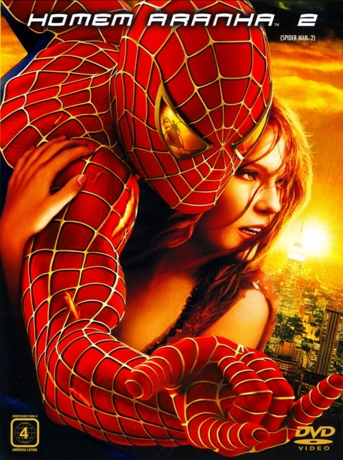

Filmes em cartaz (até 31/09)
Homem Aranha 2
Em Homem_Aranha 2, após derrotar o Duende Verde, a vida de Peter Parker (Tobey Maguire) muda por completo. Enquanto precisa lidar com seus problemas particulares Peter recebe ainda uma má notícia: o surgimento do Dr. Octupus (Alfred Molina), um homem que possui tentáculos presos ao corpo
Homem Aranha 2
Em Homem_Aranha 2, após derrotar o Duende Verde, a vida de Peter Parker (Tobey Maguire) muda por completo. Enquanto precisa lidar com seus problemas particulares Peter recebe ainda uma má notícia: o surgimento do Dr. Octupus (Alfred Molina), um homem que possui tentáculos presos ao corpo
Homem Aranha 2
Em Homem_Aranha 2, após derrotar o Duende Verde, a vida de Peter Parker (Tobey Maguire) muda por completo. Enquanto precisa lidar com seus problemas particulares Peter recebe ainda uma má notícia: o surgimento do Dr. Octupus (Alfred Molina), um homem que possui tentáculos presos ao corpo
| Próximos filmes | ||
| Nome | Gênero | Ano |
| Vingadores | Ação | 2012 |
| Shrek 3 | Animação | 2007 |
| Hitman | Ação |